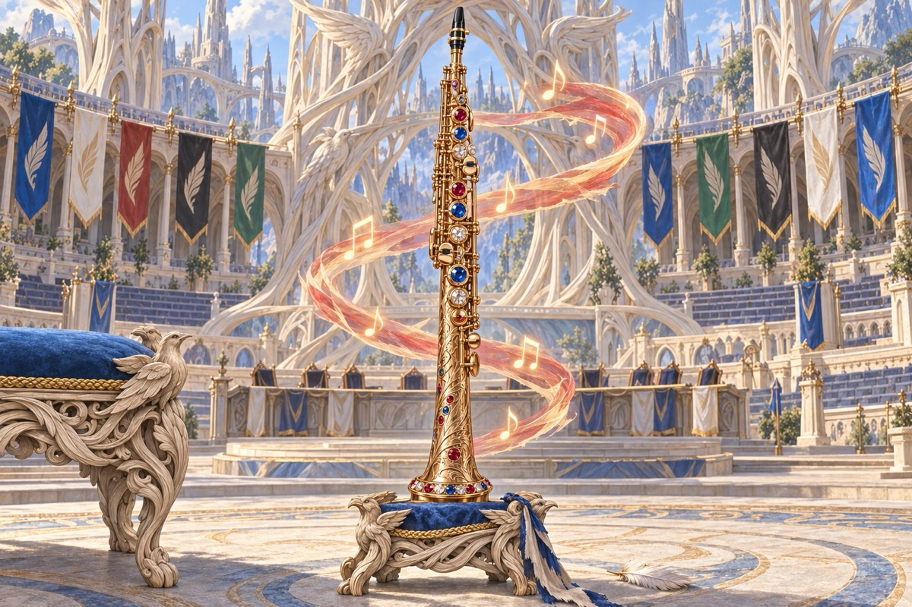
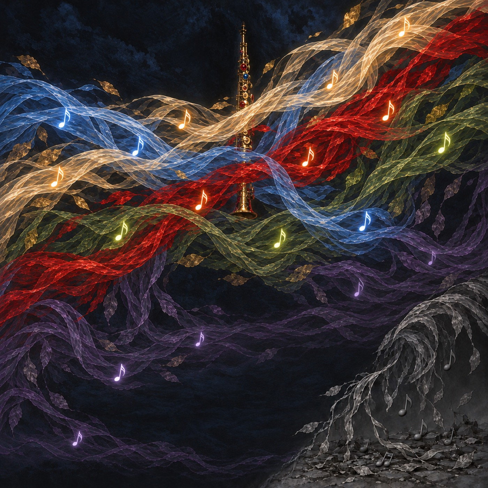

The Gale
Once a generation, Belenon's Royal Knights call the Gale. The winner's song becomes the Anthem, sung across the plane until the next Gale, and the winning guild takes the Seat of Breath at court and keeps the War Anthem horn: the jeweled soprano saxophone that played Belenon through the Hush.
This is the first Gale since the invasion. Salieri, court composer of the Cadenza Conservatory, expects to win, until his former student Amadeus crashes the contest with a punk band built from Phyrexian scrap.
Read the story

Breathe In, Play Out
Hybrid cards let you breathe the Winds of their colors, and Soul, Jazz and Blues grow stronger with every breath you hold. Etudes are the guilds' study pieces, Sagas you find with compose, and Saga creatures are legends who step on stage and become their greatest song.
Join the band with Instruments, and settle old grudges in Contests, the set's battles, where a well-rehearsed set wins the cypher.